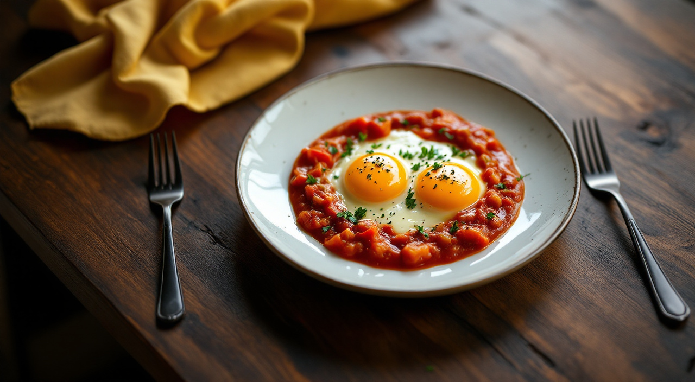

Huevos a la francesa

Características
- Dificultad: Baja
- Duración: 40 minutos
- Calorías: 300 kcal por ración
- Raciones: 4 personas
Ingredientes
| Ingrediente | Cantidad |
|---|---|
| Huevo | 4 unidades |
| Aceite de oliva virgen extra | al gusto |
| Nuez moscada | 1 una pizca |
| Tomate Frito Casero | 1 unidad |
Elaboración
Paso 1 de 2
Pon los huevos en un cazo, cubrelos con agua fria, añade un puñadito de sal y cuecelos unos 12 minutos, mientras tanto prepara Mi Salsa Bechamel un tanto espesa siguiendo las indicaciones del sobre, aromatizala con una pizca de nuez moscada
Paso 2 de 2
Pela los huevos, sumergelos en Mi Salsa Bechamel y dejalos enfriar, pasalos despues por el pan rallado y frielos en aceite bien caliente, hasta que esten dorados por todos lados, escurre el exceso de aceite posandolos unos segundos sobre papel absorbente y sirvelos enseguida acompañados de la salsa de Tomate Frito Gallina Blanca